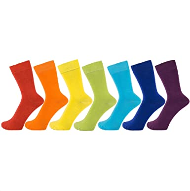

Calcetines de colores
Calcetines de vestir de algodón peinado Finest en colores vivos lisos para hombres, mujeres, 7 – 12 (US), paquete de 7

Los mejores del mercado
Calcetines de vestir de algodón peinado Finest en colores vivos lisos para hombres, mujeres, 7 – 12 (US), paquete de 7
Calcetines con tejido de rizo grueso en todo el calcetín para reducir el riesgo de aparición de ampollas. Un hilo elástico envuelve todo el calcetín y aporta una excelente sujeción del pie y del tobillo, tratándose de un calcetín largo o de media caña.
Para jugadores que se inician en el tenis y buscan unos calcetines cómodos y adaptados para la práctica deportiva. Calcetines mayoritariamente compuestos de algodón, ideales para iniciarse en el tenis con total confianza, con un producto adaptado a las necesidades de este deporte. Se venden en lote 3

Localizacion